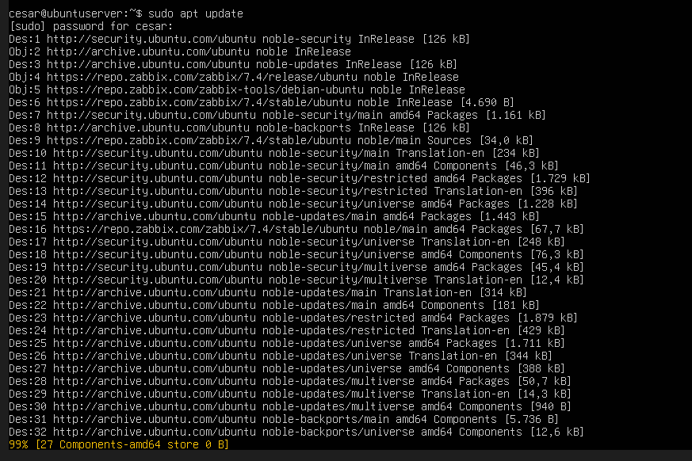
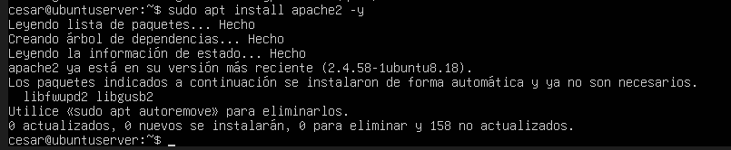
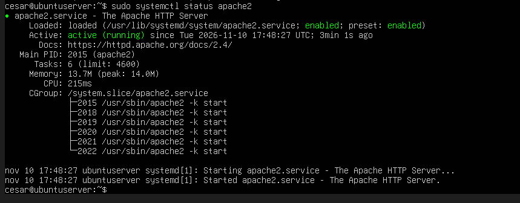
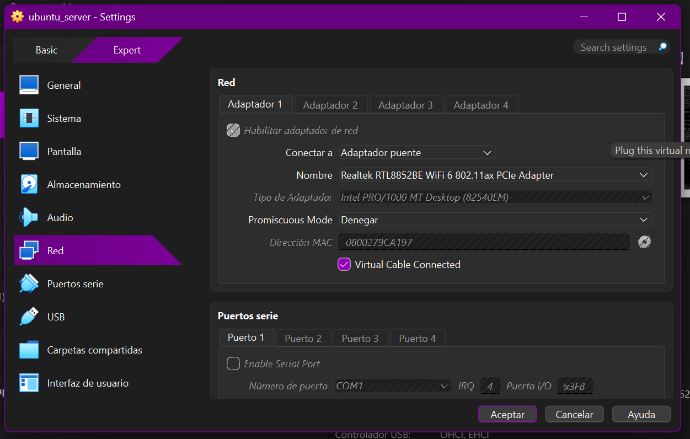
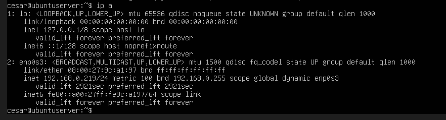
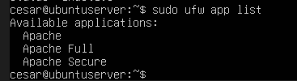
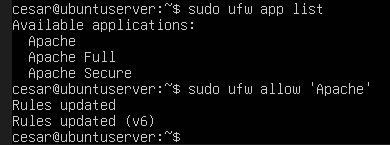
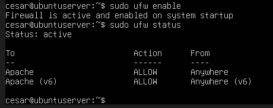
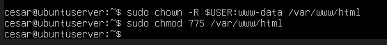
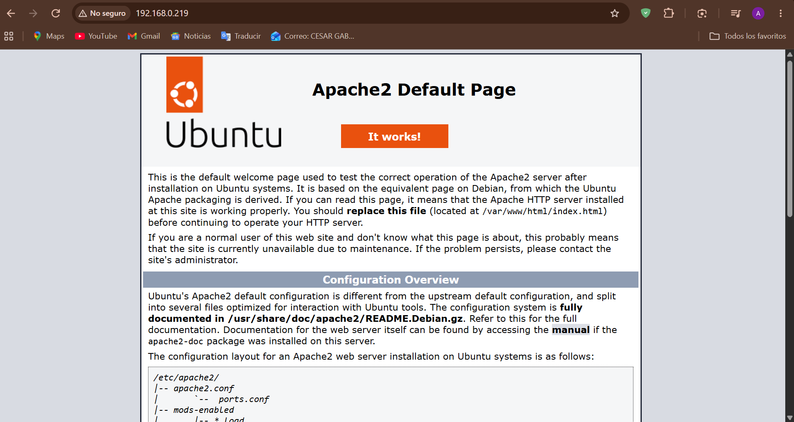

APACHE HTTP SERVER

Apache HTTP Server (httpd) es un servidor web de código abierto mantenido por Apache Software Foundation. Recibe solicitudes HTTP, entrega contenido estático y puede integrarse con aplicaciones mediante módulos y configuraciones de proxy, virtual hosts y TLS.
Configuracion modular: las directivas y modulos permiten habilitar funciones segun las necesidades del sitio.
Virtual hosts: un mismo servidor puede atender distintos nombres de dominio y sitios con configuraciones separadas.
Registro y diagnostico: genera registros de acceso y error utiles para supervisar solicitudes y resolver problemas.
Apache escucha en los puertos configurados y procesa cada solicitud usando sus directivas y módulos. La configuración define el contenido raíz, los permisos, los registros y los virtual hosts que relacionan nombres de host con sitios. Puede servir archivos directamente o reenviar solicitudes a una aplicación; HTTPS requiere habilitar TLS y configurar un certificado apropiado.
Apache es ideal para desplegar sitios web estáticos, páginas empresariales, APIs internas y aplicaciones públicas con una base de configuración muy flexible. Su modelo de módulos y hosts virtuales permite preparar varios dominios en una sola infraestructura.
Se recomienda cuando el entorno requiere equilibrio entre rendimiento, reverso proxy, seguridad por módulos y compatibilidad con múltiples tecnologías de backend. Apache suele aparecer en entornos de despliegue web híbridos o con gran cantidad de dominios y reglas.
| Aspecto | Detalle |
|---|---|
| Puertos principales | 80/TCP para HTTP y 443/TCP para HTTPS; cuando se requiere un servicio extra puede usarse un puerto diferente según la política del entorno. |
| Requisitos comunes | Servidor Linux, Unix o Windows con permisos de administración, junto con memoria y disco adecuados para la carga esperada. |
| Protocolos soportados | HTTP/1.1, HTTP/2, TLS/SSL, proxy inverso, WebSocket y virtual hosts para múltiples sitios. |
| Componentes clave | Módulos, hosts virtuales, certificados, directorios de configuración y registros de acceso/error. |
| Consideraciones | Lo más importante es mantener los módulos mínimos necesarios, controlar permisos y configurar TLS correctamente para seguridad y rendimiento. |
sudo apt update

sudo apt install apache2 -y

sudo systemctl status apache2


ip a

sudo ufw app list

sudo ufw allow 'Apache'

sudo ufw status

sudo chown -R $USER:www-data /var/www/html
sudo chmod -R 755 /var/www/html


Apache HTTP Server es una opción flexible y ampliamente disponible para publicar sitios web. Su configuración modular y los virtual hosts permiten adaptarlo a distintos despliegues; mantener módulos mínimos, permisos adecuados y TLS correctamente configurado es esencial.
| Parámetro | ip |
|---|---|
| Dirección | 192.168.30.100 |